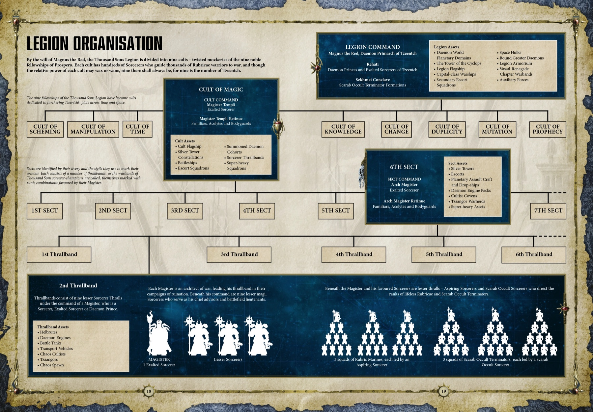

Legion Overview
军团总览
☥
第十五军团「千子」（Thousand Sons）由原体 马格努斯·红（Magnus the Red）统率，母星为知识之城 普洛斯佩罗（Prospero）。
在荷鲁斯叛乱爆发之前，千子军团以全员皆具灵能天赋而著称——这在阿斯塔特诸军团中独一无二。他们被容许研习巫术、按「五大巫师学派」分门别类，是帝皇麾下对灵能理解最为深邃的军团。
然而这份天赋也带来了 「血肉异变」（Flesh-Change）的诅咒——部分成员会不受控制地发生突变。这使得军团兵力长期受限，成为诸军团中规模最小的一支，但也因此更加精悍。
本档案记录的是千子军团尚未堕入混沌、仍为帝国效忠时的编制与军种。
千子军团徽记 · 叛乱前（Pre-Heresy）
Organisation
组织结构
☥
千子军团的编制异于其他军团：以「伙伴团」（Fellowship）为基本单位，每个伙伴团与某一巫师学派紧密相连，并保有五大秘术会等专业部队。下图为军团组织结构全览。

▲ 点击图片查看高清大图
Command
军团指挥
☥
Battleline Infantry
步兵军种
☥
The Five Cults
五大巫师学派
☥
千子军团巫术体系的基石。每一名军团巫师都隶属于一个学派，专精某一领域的灵能。五大学派共同构成了马格努斯治下最完备的灵能学术体系。
Elite & Occult Orders
精英部队
☥
Armour & Vehicles
装甲与载具
☥
Auxilia
辅助军
☥